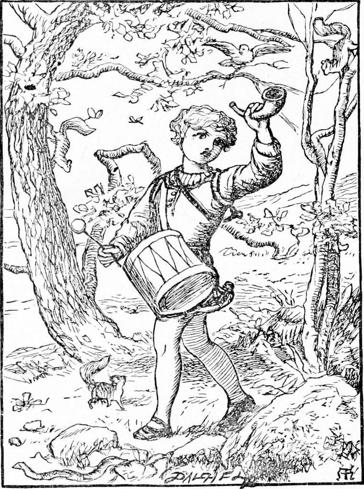
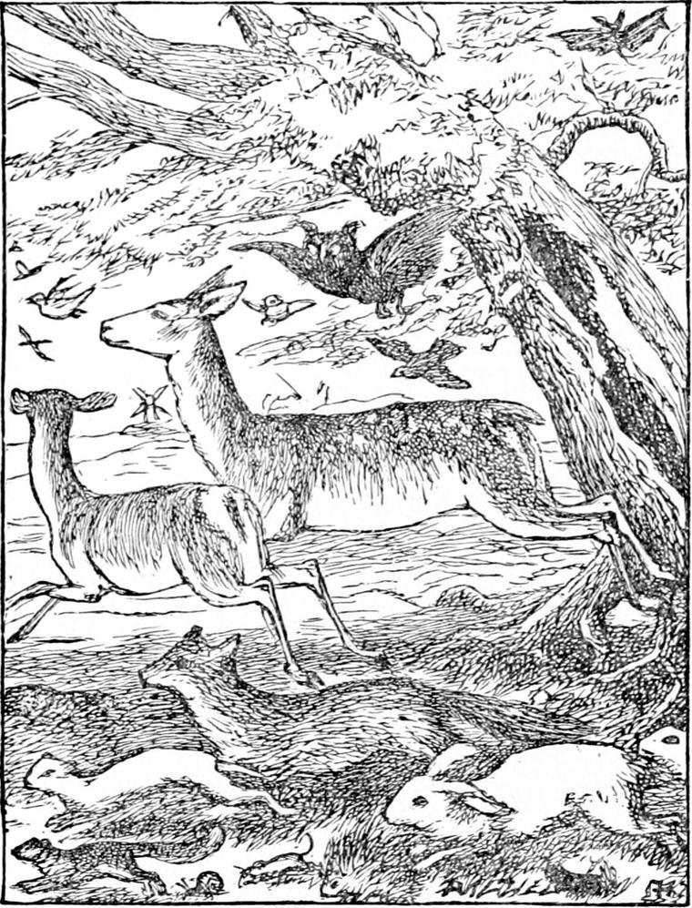

THE question of the tall gentleman as to whether Diamond could read or not set his father thinking it was high time he could; and as soon as old Diamond was suppered and bedded, he began the task that very night. But it was not much of a task to Diamond, for his father took for his lesson-book those very rhymes his mother had picked up on the sea-shore; and as Diamond was not beginning too soon, he learned very fast indeed. Within a month he was able to spell out most of the verses for himself.
But he had never come upon the poem he thought he had heard his mother read from it that day. He had looked through and through the book several times after he knew the letters and a few words, fancying he could tell the look of it, but had always failed to find one more like it than another. So he wisely gave up the search till he could really read. Then he resolved to begin at the beginning, and read them all straight through. This took him nearly a fortnight. When he had almost reached the end, he came upon the following verses, which took his fancy much, although they were certainly not very like those he was in search of.
LITTLE BOY BLUE
Sing apples and cherries, roses and honey;
He said, “I would not go back if I could,
It's all so jolly and funny.”
Apples and cherries, roses and honey;
So here I'll sit, like a king on my throne,
All so jolly and funny.”
Apples and cherries, roses and honey;
“Lie down at my feet, little snake,” said he,
All so jolly and funny.
Apples and cherries, roses and honey;
“Come and sing your song on my finger instead,
All so jolly and funny.”
And sang him the song of Birdie Brown.
And he thought he had better walk on a bit.
And he said, “Come along, little bird and snake.”
And the snake went first and Birdie Brown last;
Flew Birdie Brown with its song in its heart.
“Tree, drop me an apple down at my feet.”
“Come to my mouth, sweet kisses,” he said.
The grass, too many for him to grapple.
Fall to his mouth, each a full-grown kiss.
He said, “Little brook, you are going wrong.
Do as I tell you, and come this way.”
Leaped from its bed and after him took,
The dead leaves rustled as the water ran.
And every creature low down below,
Took their legs and their wings and followed him all;
Each on his own little humpy brown back;
And butterflies, flutterbies, ships all sails;
And owls, and rere-mice, and harkydarks,
After the merry boy fluttering and going;
The swallows and flies, flying and swallowing;
Cockroaches, henroaches, cuckoos in herds.
And lost all his thread from end to beginning.
He never had made such undignified haste.
The mole in his moleskins left his barrowing burrowing.

And the midges in columns so upright and easy.
Calling for followers still as he went,
And crying aloud, “Come all of you, come!”
And the shadows began to flicker and flee,
Over the dead leaves flickering and muttering.
With whistle and pipe, and rustle and hollo.”
As if he had been the gold cock on the spire.
And left the farmers all in the lurch.
Everything, everything, all and some.
Only their feet were too fast in their boots,
As on through their boles he kept walking and wending,
Shouting and calling, “Come after me!”
And stood as if nothing had been amiss.
And the creatures came round him every one.
And down they sank through the thin blue air.
“Come here; I want you; I know best.”
And burned and glowed in purple and gold.
“What's to be done with them all, I wonder.”
“What to do with you all I am sure I don't know.”
The snake sneaked close; round Birdie Brown flew;
And the wind came up with a what-will-you wail;
The mole opened his very eyes and glared;
Little Boy Blue was afraid of his life.
And what he sang was the very thing:
Pray what do you want us all to do?”
“I'm sure I don't want you—get away—do.”
Sang Birdie Brown, “it mustn't be so.
Give us some work, or else we stay.”
Said Little Boy Blue, and began to cry.
And up he stood, and spoke like a king.
Off with you all! Take me back to my mother.”
“Follow me, follow me” came from Birdie Brown's breast.
Said the brook, as it sank and turned and ran.
“If we stay, we shall all be missed from our posts.”
“I was just going there, when you brought me here.”
And he turned his sack with a swing and a swirl.

Said the brook running faster, “I run through his garden.”
Last year, and I'm going again next autumn.”
What in earth or in water did you bring us here for?”
“That's what I tell you. If that you won't do,
I think I will; I begin to doubt you.”
And hissed three times, half a hiss, half a wail.
But wherever he turned, sat the snake and faced him.
“I tell you, snake, I will break your head.”
So he hit him hard with the stick of his drum.
And Little Boy Blue set his foot on his head.
And marshalled him home with a high cockolorum.
Apples and cherries, roses and honey;
Little Boy Blue has listened to me—
All so jolly and funny.